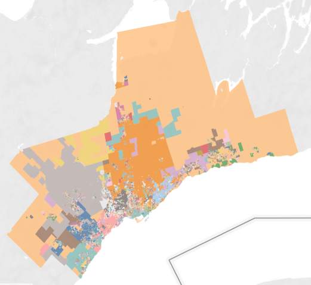

A density based approach
ETL for Demographic and Geographic data from StatCan
Multiprocessing shortened processing from ~20 hours to ~5 hours. However, multiple data frames need to be recombined and then geometrically exploded to provide similar output to the original serial approach.
Principal computation is determining which DAs belong to each individual LA. The spatial operation 'within' was onerous and the calculations were split across multiple sessions. Only one seesion is presented here for clarity.
Calculate population, area and density values based on LA-DA intersections.
Which LA best represents the DA? Calculate the population density per LA and rank them across each constituent DA (there can be many LAs for a single DA). LA with rank '1' for a specific DA is the most representative.